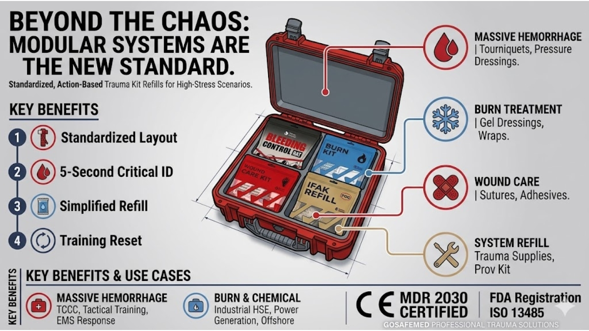

Beyond the Chaos: Why Modular Systems are the New Standard for Professional Trauma Bags
MAY 19, 2026

When an emergency happens, nobody has time to read a checklist.
For years, the industry standard for professional trauma bags has been to “fill it up.” We’ve seen thousands of bags packed with high-quality components, but they all share the same fatal flaw: the Jumble Effect. In a high-stress rescue, a responder can spend 30% of their time just digging for a tourniquet or a specific burn dressing.
That’s not just a mess; it’s a liability.
Solving the Efficiency Gap with Action-Based Logic
At GoSafeMed, we’ve moved away from selling loose items. Our Modular First Aid System is built on Action-Based Logic. We group components into color-coded, labeled modules—such as Massive Hemorrhage, Airway, and Burn Care.
How this solves your business problems
- Reduced Training & Response Time: You don’t need to train staff to recognize 50 different medical items. You just teach them to “grab the Red module for bleeding.” This minimizes human error in critical moments.
- Simplified Refill & Maintenance: For OH&S service providers, the biggest cost is labor. Counting loose bandages during a site audit is a waste of time. With our Refill Modules, your team simply replaces the entire unit if one item is used or expired. It turns a 20-minute audit into a 2-minute swap.
- Optimized Inventory: Instead of managing 100+ SKUs, you manage four core modules. This streamlines your supply chain and reduces dead stock.
The 2030 Compliance Advantage
In the Canadian and European markets, regulatory shifts are a constant risk. We’ve secured CE MDR (TÜV SÜD) certification valid through 2030 and maintained FDA registration. For our partners, this means you don’t have to worry about certification lapses or sudden supplier changes for the next four years. Your tenders are safe, and your inventory is future-proof.
Conclusion
A trauma bag should be a tool, not a puzzle. By switching to a modular system, you’re providing your clients with a faster, safer, and more professional response solution.